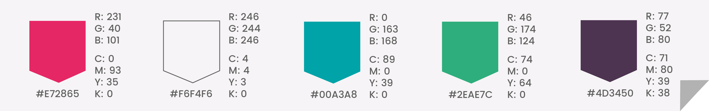
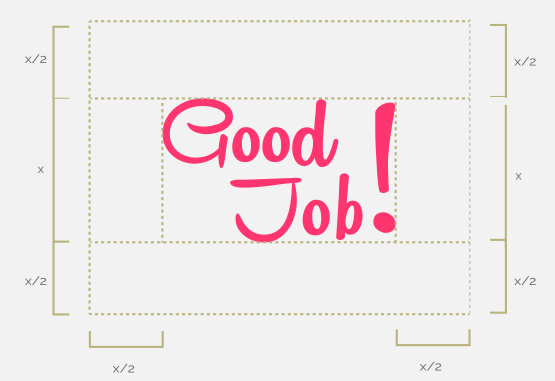
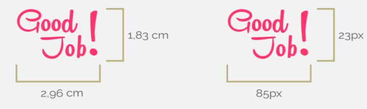
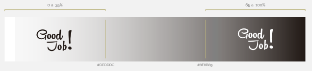
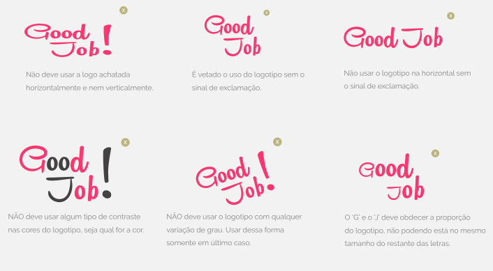

Apresentação
Abaixo estão os componentes que formam a marca GoodJob, incluindo sua tipografia e símbolo, além de regras de uso, aplicações de exemplos e downloads das peças, para guiar você durante todo o processo de aplicação da marca, em diversas situações.
É imprescindível o uso de todas as regras aqui estabelecidas, independentemente da peça de comunicação em contexto, para garantir a consistência e coerência de todas as manifestações da marca e estabelecer uma linguagem única, sólida e facilmente reconhecível.
Visão
"O GoodJob! é um projeto que busca agregar valor aos Projetos Sociais por meio da articulação de uma plataforma colaborativa de design, promovendo visibilidade e confiabilidade aos Projetos Sociais e oportunidades de adquirir experiência profissional e desenvolver conteúdo para seus currículos."
Os 3 pilares do GoodJob
Identidade Visual
Logo
Logo Horizontal
Logo Vertical
O logotipo da marca do projeto é construído a partir das palavras “Good” e “Job”, seguidas por um ponto de exclamação. A expressão traduzida para o Português significa “Bom trabalho”, que relacionado ao voluntariado que os estudantes estarão praticando nos Projetos Sociais, pode-se adquirir um sentido de boa ação. Ele é construído a partir das palavras ‘Good’ e ‘Job’, seguidas por um ponto de exclamação, utilizando o tipo Remachine Script.
Para as fontes de apoio aos conteúdos remetentes a marca, utilizam-se dois tipos geométricos arredondados, que remetem a um aspecto afetuoso e sentimental, mas confiante e responsável. Para títulos e destaques o tipo ‘Poppins’ em peso forte, para texto extenso, o tipo ‘Raleway - Regular’, sempre mantendo o contraste visual.
Símbolo
Símbolo Padrão
Símbolo Mínimo
O Símbolo da marca reflete o afeto que o GoodJob! busca passar para seu público. É constituído pelas das letras ‘o’ e ‘j’ da tipografia da marca, gerando um símbolo representativo de um sorriso. Ele é apoiado por um retângulo com uma dobra em sua ponta inferior direita, remetendo a um post-it.
Paleta de Cores

Paleta de Cores
O símbolo e a tipografia da marca, em aplicações coloridas, devem ser reproduzidos utilizando somente o Rosa GoodJob! Para a utilização de elementos de apoio à marca, utiliza-se o Verde GoodJob! como cor secundária e variações do Rosa e do Verde GoodJob!, devendo-se sempre respeitar os critérios de contraste, legibilidade e identificação.
Harmonica Acromática
Símbolo Padrão em tons de cinza
Símbolo Mínimo em preto e branco
O símbolo e a tipografia da marca, em aplicações acromáticas, devem ser reproduzidos utilizando-se o preto sobre o branco na marca, o branco sobre o preto na marca, ou em qualquer variação de cinza, de acordo com sua legibilidade e reconhecimento no contexto.
Guia de Utilização
Variações
O logotipo da marca pode ser aplicado de duas maneiras: verticalmente ou horizontalmente. A forma vertical é preferencial e deve ser utilizada em todas as ocasiões em que for aplicável. A variação horizontal só deve ser utilizada nos casos em que a vertical possua pouca eficiência, e pode ser utilizada de duas formas: com o símbolo na lateral, ou superior.
O símbolo da marca varia de duas maneiras: sua forma padrão e sua forma mínima. A forma padrão do símbolo é preferencial e deve ser utilizada em todas as ocasiões em que for aplicável. A forma mínima só deve ser utilizada nos casos em que a forma padrão possua pouca eficiência.
Área de Proteção

Área de Proteção da Marca
Para manter a visibilidade e identificação dos elementos da marca, é necessário garantir um espaço mínimo para a marca em relação outros elementos. A área de proteção dos elementos visuais da marca é equivalente a metade da altura do elemento em si.
Tamanho Mínimo

Tamanho Mínimo
Para preservar a legibilidade dos elementos visuais da marca, é estipulado um tamanho mínimo obrigatório para sua utilização. Para a tipografia, esse valor é equivalente a 2,96 x 1,83 centímetros para reprodução impressa e 85 x 23 pixeis para reprodução digital. Para tamanhos menores, usar o símbolo.
Aplicação Acromática Sobre Fundos


Escala de Aplicação Acromática
Duas regras regem a aplicação da marca acromática sobre fundos p/b e coloridos. Para aplicações em fundos p/b, a marca deve ser aplicada em branco total em escala de cinza entre 65% e 100% e em cinza GoodJob! entre escala de cinza de 0% a 35%. A marca não deve ser aplicada em outros tons. Para aplicações em fundos coloridos, a marca deve ser aplicada de acordo com a legibilidade e identificação da forma.
Aplicação Colorida Sobre Fundos

Escala de Aplicação Colorida
A orientação a respeito da aplicação dos elementos da marca colorida é de acordo com a legibilidade e identificação da forma.
Restrições de Uso

Restrições de Uso da Marca
A marca não deve ser distorcida, cortada ou ser utilizada em cores diferentes das indicadas nesse manual. A marca pode ser ampliada somente utilizando sua proporção original disponibilizada no manual. Os exemplos a seguir demonstram utilizações incorretas da marca.
{kind=link}
{kind=link}
{kind=link}
{kind=link}
{kind=link}
{kind=link}
{kind=link}
{kind=link}